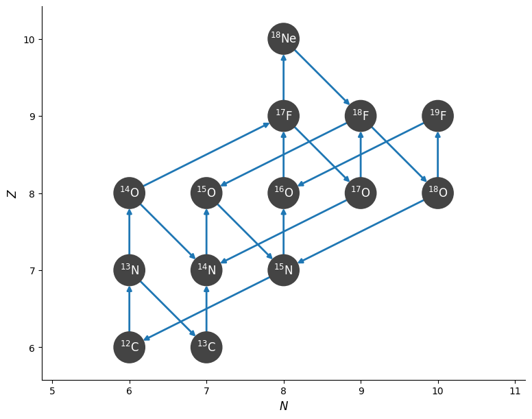
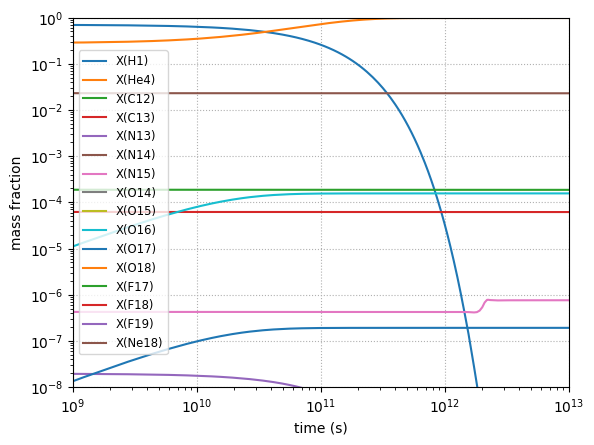

Integration Example#
We can use pynucastro to generate the righthand side function for an astrophysical reaction network.
We’ll create a CNO network that has the rates for all 4 CNO cycles + hot-CNO, as listed here: https://reaclib.jinaweb.org/popularRates.php
import numpy as np
import matplotlib.pyplot as plt
import pynucastro as pyna
rate_names = ["c12(p,g)n13",
"c13(p,g)n14",
"n13(,)c13",
"n13(p,g)o14",
"n14(p,g)o15",
"n15(p,a)c12",
"o14(,)n14",
"o15(,)n15",
"n15(p,g)o16",
"o16(p,g)f17",
"f17(,)o17",
"o17(p,a)n14",
"o17(p,g)f18",
"f18(,)o18",
"o18(p,a)n15",
"o18(p,g)f19",
"f19(p,a)o16",
"o14(a,p)f17",
"f17(p,g)ne18",
"ne18(,)f18",
"f18(p,a)o15"]
rl = pyna.ReacLibLibrary()
rates = rl.get_rate_by_name(rate_names)
rc = pyna.RateCollection(rates=rates)
We can visualize the network and rates linking the nuclei
fig = rc.plot()

pynucastro can write out the python code needed to evaluate the reaction rates
pynet = pyna.PythonNetwork(rates=rates)
pynet.write_network("cno_integration_example.py")
Show code cell content
Hide code cell content
%cat cno_integration_example.py
import numba
import numpy as np
from pynucastro.constants import constants
from numba.experimental import jitclass
from pynucastro.rates import (TableIndex, TableInterpolator, TabularRate,
TempTableInterpolator, TemperatureTabularRate,
Tfactors)
from pynucastro.screening import PlasmaState, ScreenFactors
jp = 0
jhe4 = 1
jc12 = 2
jc13 = 3
jn13 = 4
jn14 = 5
jn15 = 6
jo14 = 7
jo15 = 8
jo16 = 9
jo17 = 10
jo18 = 11
jf17 = 12
jf18 = 13
jf19 = 14
jne18 = 15
nnuc = 16
A = np.zeros((nnuc), dtype=np.int32)
A[jp] = 1
A[jhe4] = 4
A[jc12] = 12
A[jc13] = 13
A[jn13] = 13
A[jn14] = 14
A[jn15] = 15
A[jo14] = 14
A[jo15] = 15
A[jo16] = 16
A[jo17] = 17
A[jo18] = 18
A[jf17] = 17
A[jf18] = 18
A[jf19] = 19
A[jne18] = 18
Z = np.zeros((nnuc), dtype=np.int32)
Z[jp] = 1
Z[jhe4] = 2
Z[jc12] = 6
Z[jc13] = 6
Z[jn13] = 7
Z[jn14] = 7
Z[jn15] = 7
Z[jo14] = 8
Z[jo15] = 8
Z[jo16] = 8
Z[jo17] = 8
Z[jo18] = 8
Z[jf17] = 9
Z[jf18] = 9
Z[jf19] = 9
Z[jne18] = 10
# masses in ergs
mass = np.zeros((nnuc), dtype=np.float64)
mass[jp] = 0.0015040963047307696
mass[jhe4] = 0.0059735574859708365
mass[jc12] = 0.017909017027273523
mass[jc13] = 0.01940644192976114
mass[jn13] = 0.01940999951603316
mass[jn14] = 0.020898440897976135
mass[jn15] = 0.022386433805845516
mass[jo14] = 0.020906683078094165
mass[jo15] = 0.02239084645968795
mass[jo16] = 0.023871099855618198
mass[jo17] = 0.025369811672200496
mass[jo18] = 0.026862271330925704
mass[jf17] = 0.025374234423440733
mass[jf18] = 0.026864924401329426
mass[jf19] = 0.028353560476732827
mass[jne18] = 0.026872045275379234
names = []
names.append("H1")
names.append("He4")
names.append("C12")
names.append("C13")
names.append("N13")
names.append("N14")
names.append("N15")
names.append("O14")
names.append("O15")
names.append("O16")
names.append("O17")
names.append("O18")
names.append("F17")
names.append("F18")
names.append("F19")
names.append("Ne18")
def to_composition(Y):
"""Convert an array of molar fractions to a Composition object."""
from pynucastro import Composition, Nucleus
nuclei = [Nucleus.from_cache(name) for name in names]
comp = Composition(nuclei)
for i, nuc in enumerate(nuclei):
comp.X[nuc] = Y[i] * A[i]
return comp
def energy_release(dY):
"""return the energy release in erg/g (/s if dY is actually dY/dt)"""
enuc = 0.0
for i, y in enumerate(dY):
enuc += y * mass[i]
enuc *= -1*constants.N_A
return enuc
@jitclass([
("p_C12_to_N13_reaclib", numba.float64),
("p_C13_to_N14_reaclib", numba.float64),
("N13_to_C13_reaclib", numba.float64),
("p_N13_to_O14_reaclib", numba.float64),
("p_N14_to_O15_reaclib", numba.float64),
("p_N15_to_He4_C12_reaclib", numba.float64),
("O14_to_N14_reaclib", numba.float64),
("O15_to_N15_reaclib", numba.float64),
("p_N15_to_O16_reaclib", numba.float64),
("p_O16_to_F17_reaclib", numba.float64),
("F17_to_O17_reaclib", numba.float64),
("p_O17_to_He4_N14_reaclib", numba.float64),
("p_O17_to_F18_reaclib", numba.float64),
("F18_to_O18_reaclib", numba.float64),
("p_O18_to_He4_N15_reaclib", numba.float64),
("p_O18_to_F19_reaclib", numba.float64),
("p_F19_to_He4_O16_reaclib", numba.float64),
("He4_O14_to_p_F17_reaclib", numba.float64),
("p_F17_to_Ne18_reaclib", numba.float64),
("Ne18_to_F18_reaclib", numba.float64),
("p_F18_to_He4_O15_reaclib", numba.float64),
])
class RateEval:
def __init__(self):
self.p_C12_to_N13_reaclib = np.nan
self.p_C13_to_N14_reaclib = np.nan
self.N13_to_C13_reaclib = np.nan
self.p_N13_to_O14_reaclib = np.nan
self.p_N14_to_O15_reaclib = np.nan
self.p_N15_to_He4_C12_reaclib = np.nan
self.O14_to_N14_reaclib = np.nan
self.O15_to_N15_reaclib = np.nan
self.p_N15_to_O16_reaclib = np.nan
self.p_O16_to_F17_reaclib = np.nan
self.F17_to_O17_reaclib = np.nan
self.p_O17_to_He4_N14_reaclib = np.nan
self.p_O17_to_F18_reaclib = np.nan
self.F18_to_O18_reaclib = np.nan
self.p_O18_to_He4_N15_reaclib = np.nan
self.p_O18_to_F19_reaclib = np.nan
self.p_F19_to_He4_O16_reaclib = np.nan
self.He4_O14_to_p_F17_reaclib = np.nan
self.p_F17_to_Ne18_reaclib = np.nan
self.Ne18_to_F18_reaclib = np.nan
self.p_F18_to_He4_O15_reaclib = np.nan
@numba.njit()
def ye(Y):
return np.sum(Z * Y)/np.sum(A * Y)
@numba.njit()
def p_C12_to_N13_reaclib(rate_eval, tf, log_scor=0.0):
# C12 + p --> N13
rate = 0.0
# ls09n
ln_set_rate = 17.1482 + -13.692*tf.T913i + -0.230881*tf.T913 \
+ 4.44362*tf.T9 + -3.15898*tf.T953 + -0.666667*tf.lnT9
ln_set_rate += log_scor
set_rate = np.exp(ln_set_rate)
rate += set_rate
# ls09r
ln_set_rate = 17.5428 + -3.77849*tf.T9i + -5.10735*tf.T913i + -2.24111*tf.T913 \
+ 0.148883*tf.T9 + -1.5*tf.lnT9
ln_set_rate += log_scor
set_rate = np.exp(ln_set_rate)
rate += set_rate
rate_eval.p_C12_to_N13_reaclib = rate
@numba.njit()
def p_C13_to_N14_reaclib(rate_eval, tf, log_scor=0.0):
# C13 + p --> N14
rate = 0.0
# nacrn
ln_set_rate = 18.5155 + -13.72*tf.T913i + -0.450018*tf.T913 \
+ 3.70823*tf.T9 + -1.70545*tf.T953 + -0.666667*tf.lnT9
ln_set_rate += log_scor
set_rate = np.exp(ln_set_rate)
rate += set_rate
# nacrr
ln_set_rate = 13.9637 + -5.78147*tf.T9i + -0.196703*tf.T913 \
+ 0.142126*tf.T9 + -0.0238912*tf.T953 + -1.5*tf.lnT9
ln_set_rate += log_scor
set_rate = np.exp(ln_set_rate)
rate += set_rate
# nacrr
ln_set_rate = 15.1825 + -13.5543*tf.T9i \
+ -1.5*tf.lnT9
ln_set_rate += log_scor
set_rate = np.exp(ln_set_rate)
rate += set_rate
rate_eval.p_C13_to_N14_reaclib = rate
@numba.njit()
def N13_to_C13_reaclib(rate_eval, tf, log_scor=0.0):
# N13 --> C13
rate = 0.0
# wc12w
ln_set_rate = -6.7601
ln_set_rate += log_scor
set_rate = np.exp(ln_set_rate)
rate += set_rate
rate_eval.N13_to_C13_reaclib = rate
@numba.njit()
def p_N13_to_O14_reaclib(rate_eval, tf, log_scor=0.0):
# N13 + p --> O14
rate = 0.0
# lg06r
ln_set_rate = 10.9971 + -6.12602*tf.T9i + 1.57122*tf.T913i \
+ -1.5*tf.lnT9
ln_set_rate += log_scor
set_rate = np.exp(ln_set_rate)
rate += set_rate
# lg06n
ln_set_rate = 18.1356 + -15.1676*tf.T913i + 0.0955166*tf.T913 \
+ 3.0659*tf.T9 + -0.507339*tf.T953 + -0.666667*tf.lnT9
ln_set_rate += log_scor
set_rate = np.exp(ln_set_rate)
rate += set_rate
rate_eval.p_N13_to_O14_reaclib = rate
@numba.njit()
def p_N14_to_O15_reaclib(rate_eval, tf, log_scor=0.0):
# N14 + p --> O15
rate = 0.0
# im05r
ln_set_rate = 6.73578 + -4.891*tf.T9i \
+ 0.0682*tf.lnT9
ln_set_rate += log_scor
set_rate = np.exp(ln_set_rate)
rate += set_rate
# im05r
ln_set_rate = 7.65444 + -2.998*tf.T9i \
+ -1.5*tf.lnT9
ln_set_rate += log_scor
set_rate = np.exp(ln_set_rate)
rate += set_rate
# im05n
ln_set_rate = 20.1169 + -15.193*tf.T913i + -4.63975*tf.T913 \
+ 9.73458*tf.T9 + -9.55051*tf.T953 + 0.333333*tf.lnT9
ln_set_rate += log_scor
set_rate = np.exp(ln_set_rate)
rate += set_rate
# im05n
ln_set_rate = 17.01 + -15.193*tf.T913i + -0.161954*tf.T913 \
+ -7.52123*tf.T9 + -0.987565*tf.T953 + -0.666667*tf.lnT9
ln_set_rate += log_scor
set_rate = np.exp(ln_set_rate)
rate += set_rate
rate_eval.p_N14_to_O15_reaclib = rate
@numba.njit()
def p_N15_to_He4_C12_reaclib(rate_eval, tf, log_scor=0.0):
# N15 + p --> He4 + C12
rate = 0.0
# nacrn
ln_set_rate = 27.4764 + -15.253*tf.T913i + 1.59318*tf.T913 \
+ 2.4479*tf.T9 + -2.19708*tf.T953 + -0.666667*tf.lnT9
ln_set_rate += log_scor
set_rate = np.exp(ln_set_rate)
rate += set_rate
# nacrr
ln_set_rate = -6.57522 + -1.1638*tf.T9i + 22.7105*tf.T913 \
+ -2.90707*tf.T9 + 0.205754*tf.T953 + -1.5*tf.lnT9
ln_set_rate += log_scor
set_rate = np.exp(ln_set_rate)
rate += set_rate
# nacrr
ln_set_rate = 20.8972 + -7.406*tf.T9i \
+ -1.5*tf.lnT9
ln_set_rate += log_scor
set_rate = np.exp(ln_set_rate)
rate += set_rate
# nacrr
ln_set_rate = -4.87347 + -2.02117*tf.T9i + 30.8497*tf.T913 \
+ -8.50433*tf.T9 + -1.54426*tf.T953 + -1.5*tf.lnT9
ln_set_rate += log_scor
set_rate = np.exp(ln_set_rate)
rate += set_rate
rate_eval.p_N15_to_He4_C12_reaclib = rate
@numba.njit()
def O14_to_N14_reaclib(rate_eval, tf, log_scor=0.0):
# O14 --> N14
rate = 0.0
# wc12w
ln_set_rate = -4.62354
ln_set_rate += log_scor
set_rate = np.exp(ln_set_rate)
rate += set_rate
rate_eval.O14_to_N14_reaclib = rate
@numba.njit()
def O15_to_N15_reaclib(rate_eval, tf, log_scor=0.0):
# O15 --> N15
rate = 0.0
# wc12w
ln_set_rate = -5.17053
ln_set_rate += log_scor
set_rate = np.exp(ln_set_rate)
rate += set_rate
rate_eval.O15_to_N15_reaclib = rate
@numba.njit()
def p_N15_to_O16_reaclib(rate_eval, tf, log_scor=0.0):
# N15 + p --> O16
rate = 0.0
# li10r
ln_set_rate = 14.5444 + -10.2295*tf.T9i \
+ 0.0459037*tf.T9 + -1.5*tf.lnT9
ln_set_rate += log_scor
set_rate = np.exp(ln_set_rate)
rate += set_rate
# li10r
ln_set_rate = 6.59056 + -2.92315*tf.T9i \
+ -1.5*tf.lnT9
ln_set_rate += log_scor
set_rate = np.exp(ln_set_rate)
rate += set_rate
# li10n
ln_set_rate = 20.0176 + -15.24*tf.T913i + 0.334926*tf.T913 \
+ 4.59088*tf.T9 + -4.78468*tf.T953 + -0.666667*tf.lnT9
ln_set_rate += log_scor
set_rate = np.exp(ln_set_rate)
rate += set_rate
rate_eval.p_N15_to_O16_reaclib = rate
@numba.njit()
def p_O16_to_F17_reaclib(rate_eval, tf, log_scor=0.0):
# O16 + p --> F17
rate = 0.0
# ia08n
ln_set_rate = 19.0904 + -16.696*tf.T913i + -1.16252*tf.T913 \
+ 0.267703*tf.T9 + -0.0338411*tf.T953 + -0.666667*tf.lnT9
ln_set_rate += log_scor
set_rate = np.exp(ln_set_rate)
rate += set_rate
rate_eval.p_O16_to_F17_reaclib = rate
@numba.njit()
def F17_to_O17_reaclib(rate_eval, tf, log_scor=0.0):
# F17 --> O17
rate = 0.0
# wc12w
ln_set_rate = -4.53318
ln_set_rate += log_scor
set_rate = np.exp(ln_set_rate)
rate += set_rate
rate_eval.F17_to_O17_reaclib = rate
@numba.njit()
def p_O17_to_He4_N14_reaclib(rate_eval, tf, log_scor=0.0):
# O17 + p --> He4 + N14
rate = 0.0
# il10r
ln_set_rate = -7.20763 + -0.753395*tf.T9i \
+ -1.5*tf.lnT9
ln_set_rate += log_scor
set_rate = np.exp(ln_set_rate)
rate += set_rate
# il10n
ln_set_rate = 19.579 + -16.9078*tf.T913i \
+ -2.0*tf.T953 + -0.666667*tf.lnT9
ln_set_rate += log_scor
set_rate = np.exp(ln_set_rate)
rate += set_rate
# il10r
ln_set_rate = 10.174 + -4.95865*tf.T9i + 5.10182*tf.T913 \
+ 0.379373*tf.T9 + -0.0672515*tf.T953 + -1.5*tf.lnT9
ln_set_rate += log_scor
set_rate = np.exp(ln_set_rate)
rate += set_rate
# il10r
ln_set_rate = 5.5336 + -2.11477*tf.T9i \
+ -1.5*tf.lnT9
ln_set_rate += log_scor
set_rate = np.exp(ln_set_rate)
rate += set_rate
rate_eval.p_O17_to_He4_N14_reaclib = rate
@numba.njit()
def p_O17_to_F18_reaclib(rate_eval, tf, log_scor=0.0):
# O17 + p --> F18
rate = 0.0
# il10r
ln_set_rate = 9.39048 + -6.22828*tf.T9i + 2.31435*tf.T913 \
+ -0.302835*tf.T9 + 0.020133*tf.T953 + -1.5*tf.lnT9
ln_set_rate += log_scor
set_rate = np.exp(ln_set_rate)
rate += set_rate
# il10r
ln_set_rate = -13.077 + -0.746296*tf.T9i \
+ -1.5*tf.lnT9
ln_set_rate += log_scor
set_rate = np.exp(ln_set_rate)
rate += set_rate
# il10n
ln_set_rate = 15.8929 + -16.4035*tf.T913i + 4.31885*tf.T913 \
+ -0.709921*tf.T9 + -2.0*tf.T953 + -0.666667*tf.lnT9
ln_set_rate += log_scor
set_rate = np.exp(ln_set_rate)
rate += set_rate
rate_eval.p_O17_to_F18_reaclib = rate
@numba.njit()
def F18_to_O18_reaclib(rate_eval, tf, log_scor=0.0):
# F18 --> O18
rate = 0.0
# wc12w
ln_set_rate = -9.15982
ln_set_rate += log_scor
set_rate = np.exp(ln_set_rate)
rate += set_rate
rate_eval.F18_to_O18_reaclib = rate
@numba.njit()
def p_O18_to_He4_N15_reaclib(rate_eval, tf, log_scor=0.0):
# O18 + p --> He4 + N15
rate = 0.0
# il10r
ln_set_rate = -27.9044 + -0.245884*tf.T9i \
+ -1.5*tf.lnT9
ln_set_rate += log_scor
set_rate = np.exp(ln_set_rate)
rate += set_rate
# il10n
ln_set_rate = 26.9671 + -16.6979*tf.T913i \
+ -3.0*tf.T953 + -0.666667*tf.lnT9
ln_set_rate += log_scor
set_rate = np.exp(ln_set_rate)
rate += set_rate
# il10r
ln_set_rate = 8.94352 + -5.32335*tf.T9i + 11.6568*tf.T913 \
+ -2.16303*tf.T9 + 0.209965*tf.T953 + -1.5*tf.lnT9
ln_set_rate += log_scor
set_rate = np.exp(ln_set_rate)
rate += set_rate
# il10r
ln_set_rate = 10.2725 + -1.663*tf.T9i \
+ -1.5*tf.lnT9
ln_set_rate += log_scor
set_rate = np.exp(ln_set_rate)
rate += set_rate
rate_eval.p_O18_to_He4_N15_reaclib = rate
@numba.njit()
def p_O18_to_F19_reaclib(rate_eval, tf, log_scor=0.0):
# O18 + p --> F19
rate = 0.0
# il10n
ln_set_rate = 19.917 + -16.7246*tf.T913i \
+ -3.0*tf.T953 + -0.666667*tf.lnT9
ln_set_rate += log_scor
set_rate = np.exp(ln_set_rate)
rate += set_rate
# il10r
ln_set_rate = 7.26876 + -6.7253*tf.T9i + 3.99059*tf.T913 \
+ -0.593127*tf.T9 + 0.0877534*tf.T953 + -1.5*tf.lnT9
ln_set_rate += log_scor
set_rate = np.exp(ln_set_rate)
rate += set_rate
# il10r
ln_set_rate = 5.07648 + -1.65681*tf.T9i \
+ -1.5*tf.lnT9
ln_set_rate += log_scor
set_rate = np.exp(ln_set_rate)
rate += set_rate
# il10r
ln_set_rate = -35.0079 + -0.244743*tf.T9i \
+ -1.5*tf.lnT9
ln_set_rate += log_scor
set_rate = np.exp(ln_set_rate)
rate += set_rate
rate_eval.p_O18_to_F19_reaclib = rate
@numba.njit()
def p_F19_to_He4_O16_reaclib(rate_eval, tf, log_scor=0.0):
# F19 + p --> He4 + O16
rate = 0.0
# nacr
ln_set_rate = -52.7043 + -0.12765*tf.T9i \
+ -1.5*tf.lnT9
ln_set_rate += log_scor
set_rate = np.exp(ln_set_rate)
rate += set_rate
# nacr
ln_set_rate = 26.2916 + -18.116*tf.T913i \
+ 1.86674*tf.T9 + -7.5666*tf.T953 + -0.666667*tf.lnT9
ln_set_rate += log_scor
set_rate = np.exp(ln_set_rate)
rate += set_rate
# nacrr
ln_set_rate = 14.3586 + -3.286*tf.T9i \
+ -0.21103*tf.T9 + 2.87702*tf.lnT9
ln_set_rate += log_scor
set_rate = np.exp(ln_set_rate)
rate += set_rate
# nacr
ln_set_rate = 15.1955 + -3.75185*tf.T9i \
+ -1.5*tf.lnT9
ln_set_rate += log_scor
set_rate = np.exp(ln_set_rate)
rate += set_rate
# nacr
ln_set_rate = 8.239 + -2.46828*tf.T9i \
+ -1.5*tf.lnT9
ln_set_rate += log_scor
set_rate = np.exp(ln_set_rate)
rate += set_rate
rate_eval.p_F19_to_He4_O16_reaclib = rate
@numba.njit()
def He4_O14_to_p_F17_reaclib(rate_eval, tf, log_scor=0.0):
# O14 + He4 --> p + F17
rate = 0.0
# Ha96r
ln_set_rate = 12.1289 + -12.0223*tf.T9i \
+ -1.5*tf.lnT9
ln_set_rate += log_scor
set_rate = np.exp(ln_set_rate)
rate += set_rate
# Ha96r
ln_set_rate = 18.6518 + -26.0*tf.T9i \
+ -1.5*tf.lnT9
ln_set_rate += log_scor
set_rate = np.exp(ln_set_rate)
rate += set_rate
# Ha96n
ln_set_rate = 40.8358 + -39.388*tf.T913i + -17.4673*tf.T913 \
+ 35.3029*tf.T9 + -24.8162*tf.T953 + -0.666667*tf.lnT9
ln_set_rate += log_scor
set_rate = np.exp(ln_set_rate)
rate += set_rate
# Ha96r
ln_set_rate = 16.3087 + -22.51*tf.T9i \
+ -1.5*tf.lnT9
ln_set_rate += log_scor
set_rate = np.exp(ln_set_rate)
rate += set_rate
# Ha96r
ln_set_rate = 11.1184 + -13.6*tf.T9i \
+ -1.5*tf.lnT9
ln_set_rate += log_scor
set_rate = np.exp(ln_set_rate)
rate += set_rate
# Ha96r
ln_set_rate = -106.091 + -0.453036*tf.T9i \
+ -1.5*tf.lnT9
ln_set_rate += log_scor
set_rate = np.exp(ln_set_rate)
rate += set_rate
rate_eval.He4_O14_to_p_F17_reaclib = rate
@numba.njit()
def p_F17_to_Ne18_reaclib(rate_eval, tf, log_scor=0.0):
# F17 + p --> Ne18
rate = 0.0
# cb09
ln_set_rate = -7.84708 + -0.0323504*tf.T9i + -14.2191*tf.T913i + 34.0647*tf.T913 \
+ -16.5698*tf.T9 + 2.48116*tf.T953 + -2.13376*tf.lnT9
ln_set_rate += log_scor
set_rate = np.exp(ln_set_rate)
rate += set_rate
# cb09
ln_set_rate = 27.5778 + -4.95969*tf.T9i + -21.3249*tf.T913i + -0.230774*tf.T913 \
+ 0.917931*tf.T9 + -0.0440377*tf.T953 + -7.36014*tf.lnT9
ln_set_rate += log_scor
set_rate = np.exp(ln_set_rate)
rate += set_rate
rate_eval.p_F17_to_Ne18_reaclib = rate
@numba.njit()
def Ne18_to_F18_reaclib(rate_eval, tf, log_scor=0.0):
# Ne18 --> F18
rate = 0.0
# wc12w
ln_set_rate = -0.879336
ln_set_rate += log_scor
set_rate = np.exp(ln_set_rate)
rate += set_rate
rate_eval.Ne18_to_F18_reaclib = rate
@numba.njit()
def p_F18_to_He4_O15_reaclib(rate_eval, tf, log_scor=0.0):
# F18 + p --> He4 + O15
rate = 0.0
# il10r
ln_set_rate = 1.75704 + -3.01675*tf.T9i + 13.3223*tf.T913 \
+ -1.36696*tf.T9 + 0.0757363*tf.T953 + -1.5*tf.lnT9
ln_set_rate += log_scor
set_rate = np.exp(ln_set_rate)
rate += set_rate
# il10r
ln_set_rate = -31.7388 + -0.376432*tf.T9i + 61.738*tf.T913 \
+ -108.29*tf.T9 + -34.2365*tf.T953 + -1.5*tf.lnT9
ln_set_rate += log_scor
set_rate = np.exp(ln_set_rate)
rate += set_rate
# il10n
ln_set_rate = 62.0058 + -21.4023*tf.T913i + -80.8891*tf.T913 \
+ 134.6*tf.T9 + -126.504*tf.T953 + -0.666667*tf.lnT9
ln_set_rate += log_scor
set_rate = np.exp(ln_set_rate)
rate += set_rate
rate_eval.p_F18_to_He4_O15_reaclib = rate
def rhs(t, Y, rho, T, screen_func=None):
return rhs_eq(t, Y, rho, T, screen_func)
@numba.njit()
def do_rate_eval(t, Y, rho, T, screen_func):
tf = Tfactors(T)
rate_eval = RateEval()
log_scor_p_N13 = 0.0
log_scor_p_F18 = 0.0
log_scor_p_C12 = 0.0
log_scor_p_O17 = 0.0
log_scor_He4_O14 = 0.0
log_scor_p_N15 = 0.0
log_scor_p_O16 = 0.0
log_scor_p_N14 = 0.0
log_scor_p_F19 = 0.0
log_scor_p_C13 = 0.0
log_scor_p_O18 = 0.0
log_scor_p_F17 = 0.0
if screen_func is not None:
plasma_state = PlasmaState(T, rho, Y, Z)
scn_fac = ScreenFactors(1, 1, 7, 13)
log_scor_p_N13 = screen_func(plasma_state, scn_fac)
scn_fac = ScreenFactors(1, 1, 9, 18)
log_scor_p_F18 = screen_func(plasma_state, scn_fac)
scn_fac = ScreenFactors(1, 1, 6, 12)
log_scor_p_C12 = screen_func(plasma_state, scn_fac)
scn_fac = ScreenFactors(1, 1, 8, 17)
log_scor_p_O17 = screen_func(plasma_state, scn_fac)
scn_fac = ScreenFactors(2, 4, 8, 14)
log_scor_He4_O14 = screen_func(plasma_state, scn_fac)
scn_fac = ScreenFactors(1, 1, 7, 15)
log_scor_p_N15 = screen_func(plasma_state, scn_fac)
scn_fac = ScreenFactors(1, 1, 8, 16)
log_scor_p_O16 = screen_func(plasma_state, scn_fac)
scn_fac = ScreenFactors(1, 1, 7, 14)
log_scor_p_N14 = screen_func(plasma_state, scn_fac)
scn_fac = ScreenFactors(1, 1, 9, 19)
log_scor_p_F19 = screen_func(plasma_state, scn_fac)
scn_fac = ScreenFactors(1, 1, 6, 13)
log_scor_p_C13 = screen_func(plasma_state, scn_fac)
scn_fac = ScreenFactors(1, 1, 8, 18)
log_scor_p_O18 = screen_func(plasma_state, scn_fac)
scn_fac = ScreenFactors(1, 1, 9, 17)
log_scor_p_F17 = screen_func(plasma_state, scn_fac)
# reaclib rates
p_C12_to_N13_reaclib(rate_eval, tf, log_scor=log_scor_p_C12)
p_C13_to_N14_reaclib(rate_eval, tf, log_scor=log_scor_p_C13)
N13_to_C13_reaclib(rate_eval, tf)
p_N13_to_O14_reaclib(rate_eval, tf, log_scor=log_scor_p_N13)
p_N14_to_O15_reaclib(rate_eval, tf, log_scor=log_scor_p_N14)
p_N15_to_He4_C12_reaclib(rate_eval, tf, log_scor=log_scor_p_N15)
O14_to_N14_reaclib(rate_eval, tf)
O15_to_N15_reaclib(rate_eval, tf)
p_N15_to_O16_reaclib(rate_eval, tf, log_scor=log_scor_p_N15)
p_O16_to_F17_reaclib(rate_eval, tf, log_scor=log_scor_p_O16)
F17_to_O17_reaclib(rate_eval, tf)
p_O17_to_He4_N14_reaclib(rate_eval, tf, log_scor=log_scor_p_O17)
p_O17_to_F18_reaclib(rate_eval, tf, log_scor=log_scor_p_O17)
F18_to_O18_reaclib(rate_eval, tf)
p_O18_to_He4_N15_reaclib(rate_eval, tf, log_scor=log_scor_p_O18)
p_O18_to_F19_reaclib(rate_eval, tf, log_scor=log_scor_p_O18)
p_F19_to_He4_O16_reaclib(rate_eval, tf, log_scor=log_scor_p_F19)
He4_O14_to_p_F17_reaclib(rate_eval, tf, log_scor=log_scor_He4_O14)
p_F17_to_Ne18_reaclib(rate_eval, tf, log_scor=log_scor_p_F17)
Ne18_to_F18_reaclib(rate_eval, tf)
p_F18_to_He4_O15_reaclib(rate_eval, tf, log_scor=log_scor_p_F18)
return rate_eval
@numba.njit()
def rhs_eq(t, Y, rho, T, screen_func):
rate_eval = do_rate_eval(t, Y, rho, T, screen_func)
dYdt = np.zeros((nnuc), dtype=np.float64)
dYdt[jp] = (
-rho*Y[jp]*Y[jc12]*rate_eval.p_C12_to_N13_reaclib +
-rho*Y[jp]*Y[jc13]*rate_eval.p_C13_to_N14_reaclib +
-rho*Y[jp]*Y[jn13]*rate_eval.p_N13_to_O14_reaclib +
-rho*Y[jp]*Y[jn14]*rate_eval.p_N14_to_O15_reaclib +
-rho*Y[jp]*Y[jn15]*rate_eval.p_N15_to_He4_C12_reaclib +
-rho*Y[jp]*Y[jn15]*rate_eval.p_N15_to_O16_reaclib +
-rho*Y[jp]*Y[jo16]*rate_eval.p_O16_to_F17_reaclib +
-rho*Y[jp]*Y[jo17]*rate_eval.p_O17_to_He4_N14_reaclib +
-rho*Y[jp]*Y[jo17]*rate_eval.p_O17_to_F18_reaclib +
-rho*Y[jp]*Y[jo18]*rate_eval.p_O18_to_He4_N15_reaclib +
-rho*Y[jp]*Y[jo18]*rate_eval.p_O18_to_F19_reaclib +
-rho*Y[jp]*Y[jf19]*rate_eval.p_F19_to_He4_O16_reaclib +
+rho*Y[jhe4]*Y[jo14]*rate_eval.He4_O14_to_p_F17_reaclib +
-rho*Y[jp]*Y[jf17]*rate_eval.p_F17_to_Ne18_reaclib +
-rho*Y[jp]*Y[jf18]*rate_eval.p_F18_to_He4_O15_reaclib
)
dYdt[jhe4] = (
+rho*Y[jp]*Y[jn15]*rate_eval.p_N15_to_He4_C12_reaclib +
+rho*Y[jp]*Y[jo17]*rate_eval.p_O17_to_He4_N14_reaclib +
+rho*Y[jp]*Y[jo18]*rate_eval.p_O18_to_He4_N15_reaclib +
+rho*Y[jp]*Y[jf19]*rate_eval.p_F19_to_He4_O16_reaclib +
-rho*Y[jhe4]*Y[jo14]*rate_eval.He4_O14_to_p_F17_reaclib +
+rho*Y[jp]*Y[jf18]*rate_eval.p_F18_to_He4_O15_reaclib
)
dYdt[jc12] = (
-rho*Y[jp]*Y[jc12]*rate_eval.p_C12_to_N13_reaclib +
+rho*Y[jp]*Y[jn15]*rate_eval.p_N15_to_He4_C12_reaclib
)
dYdt[jc13] = (
-rho*Y[jp]*Y[jc13]*rate_eval.p_C13_to_N14_reaclib +
+Y[jn13]*rate_eval.N13_to_C13_reaclib
)
dYdt[jn13] = (
+rho*Y[jp]*Y[jc12]*rate_eval.p_C12_to_N13_reaclib +
-Y[jn13]*rate_eval.N13_to_C13_reaclib +
-rho*Y[jp]*Y[jn13]*rate_eval.p_N13_to_O14_reaclib
)
dYdt[jn14] = (
+rho*Y[jp]*Y[jc13]*rate_eval.p_C13_to_N14_reaclib +
-rho*Y[jp]*Y[jn14]*rate_eval.p_N14_to_O15_reaclib +
+Y[jo14]*rate_eval.O14_to_N14_reaclib +
+rho*Y[jp]*Y[jo17]*rate_eval.p_O17_to_He4_N14_reaclib
)
dYdt[jn15] = (
-rho*Y[jp]*Y[jn15]*rate_eval.p_N15_to_He4_C12_reaclib +
+Y[jo15]*rate_eval.O15_to_N15_reaclib +
-rho*Y[jp]*Y[jn15]*rate_eval.p_N15_to_O16_reaclib +
+rho*Y[jp]*Y[jo18]*rate_eval.p_O18_to_He4_N15_reaclib
)
dYdt[jo14] = (
+rho*Y[jp]*Y[jn13]*rate_eval.p_N13_to_O14_reaclib +
-Y[jo14]*rate_eval.O14_to_N14_reaclib +
-rho*Y[jhe4]*Y[jo14]*rate_eval.He4_O14_to_p_F17_reaclib
)
dYdt[jo15] = (
+rho*Y[jp]*Y[jn14]*rate_eval.p_N14_to_O15_reaclib +
-Y[jo15]*rate_eval.O15_to_N15_reaclib +
+rho*Y[jp]*Y[jf18]*rate_eval.p_F18_to_He4_O15_reaclib
)
dYdt[jo16] = (
+rho*Y[jp]*Y[jn15]*rate_eval.p_N15_to_O16_reaclib +
-rho*Y[jp]*Y[jo16]*rate_eval.p_O16_to_F17_reaclib +
+rho*Y[jp]*Y[jf19]*rate_eval.p_F19_to_He4_O16_reaclib
)
dYdt[jo17] = (
+Y[jf17]*rate_eval.F17_to_O17_reaclib +
-rho*Y[jp]*Y[jo17]*rate_eval.p_O17_to_He4_N14_reaclib +
-rho*Y[jp]*Y[jo17]*rate_eval.p_O17_to_F18_reaclib
)
dYdt[jo18] = (
+Y[jf18]*rate_eval.F18_to_O18_reaclib +
-rho*Y[jp]*Y[jo18]*rate_eval.p_O18_to_He4_N15_reaclib +
-rho*Y[jp]*Y[jo18]*rate_eval.p_O18_to_F19_reaclib
)
dYdt[jf17] = (
+rho*Y[jp]*Y[jo16]*rate_eval.p_O16_to_F17_reaclib +
-Y[jf17]*rate_eval.F17_to_O17_reaclib +
+rho*Y[jhe4]*Y[jo14]*rate_eval.He4_O14_to_p_F17_reaclib +
-rho*Y[jp]*Y[jf17]*rate_eval.p_F17_to_Ne18_reaclib
)
dYdt[jf18] = (
+rho*Y[jp]*Y[jo17]*rate_eval.p_O17_to_F18_reaclib +
-Y[jf18]*rate_eval.F18_to_O18_reaclib +
+Y[jne18]*rate_eval.Ne18_to_F18_reaclib +
-rho*Y[jp]*Y[jf18]*rate_eval.p_F18_to_He4_O15_reaclib
)
dYdt[jf19] = (
+rho*Y[jp]*Y[jo18]*rate_eval.p_O18_to_F19_reaclib +
-rho*Y[jp]*Y[jf19]*rate_eval.p_F19_to_He4_O16_reaclib
)
dYdt[jne18] = (
+rho*Y[jp]*Y[jf17]*rate_eval.p_F17_to_Ne18_reaclib +
-Y[jne18]*rate_eval.Ne18_to_F18_reaclib
)
return dYdt
def jacobian(t, Y, rho, T, screen_func=None):
return jacobian_eq(t, Y, rho, T, screen_func)
@numba.njit()
def jacobian_eq(t, Y, rho, T, screen_func):
tf = Tfactors(T)
rate_eval = RateEval()
log_scor_p_N13 = 0.0
log_scor_p_F18 = 0.0
log_scor_p_C12 = 0.0
log_scor_p_O17 = 0.0
log_scor_He4_O14 = 0.0
log_scor_p_N15 = 0.0
log_scor_p_O16 = 0.0
log_scor_p_N14 = 0.0
log_scor_p_F19 = 0.0
log_scor_p_C13 = 0.0
log_scor_p_O18 = 0.0
log_scor_p_F17 = 0.0
if screen_func is not None:
plasma_state = PlasmaState(T, rho, Y, Z)
scn_fac = ScreenFactors(1, 1, 7, 13)
log_scor_p_N13 = screen_func(plasma_state, scn_fac)
scn_fac = ScreenFactors(1, 1, 9, 18)
log_scor_p_F18 = screen_func(plasma_state, scn_fac)
scn_fac = ScreenFactors(1, 1, 6, 12)
log_scor_p_C12 = screen_func(plasma_state, scn_fac)
scn_fac = ScreenFactors(1, 1, 8, 17)
log_scor_p_O17 = screen_func(plasma_state, scn_fac)
scn_fac = ScreenFactors(2, 4, 8, 14)
log_scor_He4_O14 = screen_func(plasma_state, scn_fac)
scn_fac = ScreenFactors(1, 1, 7, 15)
log_scor_p_N15 = screen_func(plasma_state, scn_fac)
scn_fac = ScreenFactors(1, 1, 8, 16)
log_scor_p_O16 = screen_func(plasma_state, scn_fac)
scn_fac = ScreenFactors(1, 1, 7, 14)
log_scor_p_N14 = screen_func(plasma_state, scn_fac)
scn_fac = ScreenFactors(1, 1, 9, 19)
log_scor_p_F19 = screen_func(plasma_state, scn_fac)
scn_fac = ScreenFactors(1, 1, 6, 13)
log_scor_p_C13 = screen_func(plasma_state, scn_fac)
scn_fac = ScreenFactors(1, 1, 8, 18)
log_scor_p_O18 = screen_func(plasma_state, scn_fac)
scn_fac = ScreenFactors(1, 1, 9, 17)
log_scor_p_F17 = screen_func(plasma_state, scn_fac)
# reaclib rates
p_C12_to_N13_reaclib(rate_eval, tf, log_scor=log_scor_p_C12)
p_C13_to_N14_reaclib(rate_eval, tf, log_scor=log_scor_p_C13)
N13_to_C13_reaclib(rate_eval, tf)
p_N13_to_O14_reaclib(rate_eval, tf, log_scor=log_scor_p_N13)
p_N14_to_O15_reaclib(rate_eval, tf, log_scor=log_scor_p_N14)
p_N15_to_He4_C12_reaclib(rate_eval, tf, log_scor=log_scor_p_N15)
O14_to_N14_reaclib(rate_eval, tf)
O15_to_N15_reaclib(rate_eval, tf)
p_N15_to_O16_reaclib(rate_eval, tf, log_scor=log_scor_p_N15)
p_O16_to_F17_reaclib(rate_eval, tf, log_scor=log_scor_p_O16)
F17_to_O17_reaclib(rate_eval, tf)
p_O17_to_He4_N14_reaclib(rate_eval, tf, log_scor=log_scor_p_O17)
p_O17_to_F18_reaclib(rate_eval, tf, log_scor=log_scor_p_O17)
F18_to_O18_reaclib(rate_eval, tf)
p_O18_to_He4_N15_reaclib(rate_eval, tf, log_scor=log_scor_p_O18)
p_O18_to_F19_reaclib(rate_eval, tf, log_scor=log_scor_p_O18)
p_F19_to_He4_O16_reaclib(rate_eval, tf, log_scor=log_scor_p_F19)
He4_O14_to_p_F17_reaclib(rate_eval, tf, log_scor=log_scor_He4_O14)
p_F17_to_Ne18_reaclib(rate_eval, tf, log_scor=log_scor_p_F17)
Ne18_to_F18_reaclib(rate_eval, tf)
p_F18_to_He4_O15_reaclib(rate_eval, tf, log_scor=log_scor_p_F18)
jac = np.zeros((nnuc, nnuc), dtype=np.float64)
jac[jp, jp] = (
-rho*Y[jc12]*rate_eval.p_C12_to_N13_reaclib
-rho*Y[jc13]*rate_eval.p_C13_to_N14_reaclib
-rho*Y[jn13]*rate_eval.p_N13_to_O14_reaclib
-rho*Y[jn14]*rate_eval.p_N14_to_O15_reaclib
-rho*Y[jn15]*rate_eval.p_N15_to_He4_C12_reaclib
-rho*Y[jn15]*rate_eval.p_N15_to_O16_reaclib
-rho*Y[jo16]*rate_eval.p_O16_to_F17_reaclib
-rho*Y[jo17]*rate_eval.p_O17_to_He4_N14_reaclib
-rho*Y[jo17]*rate_eval.p_O17_to_F18_reaclib
-rho*Y[jo18]*rate_eval.p_O18_to_He4_N15_reaclib
-rho*Y[jo18]*rate_eval.p_O18_to_F19_reaclib
-rho*Y[jf19]*rate_eval.p_F19_to_He4_O16_reaclib
-rho*Y[jf17]*rate_eval.p_F17_to_Ne18_reaclib
-rho*Y[jf18]*rate_eval.p_F18_to_He4_O15_reaclib
)
jac[jp, jhe4] = (
+rho*Y[jo14]*rate_eval.He4_O14_to_p_F17_reaclib
)
jac[jp, jc12] = (
-rho*Y[jp]*rate_eval.p_C12_to_N13_reaclib
)
jac[jp, jc13] = (
-rho*Y[jp]*rate_eval.p_C13_to_N14_reaclib
)
jac[jp, jn13] = (
-rho*Y[jp]*rate_eval.p_N13_to_O14_reaclib
)
jac[jp, jn14] = (
-rho*Y[jp]*rate_eval.p_N14_to_O15_reaclib
)
jac[jp, jn15] = (
-rho*Y[jp]*rate_eval.p_N15_to_He4_C12_reaclib
-rho*Y[jp]*rate_eval.p_N15_to_O16_reaclib
)
jac[jp, jo14] = (
+rho*Y[jhe4]*rate_eval.He4_O14_to_p_F17_reaclib
)
jac[jp, jo16] = (
-rho*Y[jp]*rate_eval.p_O16_to_F17_reaclib
)
jac[jp, jo17] = (
-rho*Y[jp]*rate_eval.p_O17_to_He4_N14_reaclib
-rho*Y[jp]*rate_eval.p_O17_to_F18_reaclib
)
jac[jp, jo18] = (
-rho*Y[jp]*rate_eval.p_O18_to_He4_N15_reaclib
-rho*Y[jp]*rate_eval.p_O18_to_F19_reaclib
)
jac[jp, jf17] = (
-rho*Y[jp]*rate_eval.p_F17_to_Ne18_reaclib
)
jac[jp, jf18] = (
-rho*Y[jp]*rate_eval.p_F18_to_He4_O15_reaclib
)
jac[jp, jf19] = (
-rho*Y[jp]*rate_eval.p_F19_to_He4_O16_reaclib
)
jac[jhe4, jp] = (
+rho*Y[jn15]*rate_eval.p_N15_to_He4_C12_reaclib
+rho*Y[jo17]*rate_eval.p_O17_to_He4_N14_reaclib
+rho*Y[jo18]*rate_eval.p_O18_to_He4_N15_reaclib
+rho*Y[jf19]*rate_eval.p_F19_to_He4_O16_reaclib
+rho*Y[jf18]*rate_eval.p_F18_to_He4_O15_reaclib
)
jac[jhe4, jhe4] = (
-rho*Y[jo14]*rate_eval.He4_O14_to_p_F17_reaclib
)
jac[jhe4, jn15] = (
+rho*Y[jp]*rate_eval.p_N15_to_He4_C12_reaclib
)
jac[jhe4, jo14] = (
-rho*Y[jhe4]*rate_eval.He4_O14_to_p_F17_reaclib
)
jac[jhe4, jo17] = (
+rho*Y[jp]*rate_eval.p_O17_to_He4_N14_reaclib
)
jac[jhe4, jo18] = (
+rho*Y[jp]*rate_eval.p_O18_to_He4_N15_reaclib
)
jac[jhe4, jf18] = (
+rho*Y[jp]*rate_eval.p_F18_to_He4_O15_reaclib
)
jac[jhe4, jf19] = (
+rho*Y[jp]*rate_eval.p_F19_to_He4_O16_reaclib
)
jac[jc12, jp] = (
-rho*Y[jc12]*rate_eval.p_C12_to_N13_reaclib
+rho*Y[jn15]*rate_eval.p_N15_to_He4_C12_reaclib
)
jac[jc12, jc12] = (
-rho*Y[jp]*rate_eval.p_C12_to_N13_reaclib
)
jac[jc12, jn15] = (
+rho*Y[jp]*rate_eval.p_N15_to_He4_C12_reaclib
)
jac[jc13, jp] = (
-rho*Y[jc13]*rate_eval.p_C13_to_N14_reaclib
)
jac[jc13, jc13] = (
-rho*Y[jp]*rate_eval.p_C13_to_N14_reaclib
)
jac[jc13, jn13] = (
+rate_eval.N13_to_C13_reaclib
)
jac[jn13, jp] = (
-rho*Y[jn13]*rate_eval.p_N13_to_O14_reaclib
+rho*Y[jc12]*rate_eval.p_C12_to_N13_reaclib
)
jac[jn13, jc12] = (
+rho*Y[jp]*rate_eval.p_C12_to_N13_reaclib
)
jac[jn13, jn13] = (
-rate_eval.N13_to_C13_reaclib
-rho*Y[jp]*rate_eval.p_N13_to_O14_reaclib
)
jac[jn14, jp] = (
-rho*Y[jn14]*rate_eval.p_N14_to_O15_reaclib
+rho*Y[jc13]*rate_eval.p_C13_to_N14_reaclib
+rho*Y[jo17]*rate_eval.p_O17_to_He4_N14_reaclib
)
jac[jn14, jc13] = (
+rho*Y[jp]*rate_eval.p_C13_to_N14_reaclib
)
jac[jn14, jn14] = (
-rho*Y[jp]*rate_eval.p_N14_to_O15_reaclib
)
jac[jn14, jo14] = (
+rate_eval.O14_to_N14_reaclib
)
jac[jn14, jo17] = (
+rho*Y[jp]*rate_eval.p_O17_to_He4_N14_reaclib
)
jac[jn15, jp] = (
-rho*Y[jn15]*rate_eval.p_N15_to_He4_C12_reaclib
-rho*Y[jn15]*rate_eval.p_N15_to_O16_reaclib
+rho*Y[jo18]*rate_eval.p_O18_to_He4_N15_reaclib
)
jac[jn15, jn15] = (
-rho*Y[jp]*rate_eval.p_N15_to_He4_C12_reaclib
-rho*Y[jp]*rate_eval.p_N15_to_O16_reaclib
)
jac[jn15, jo15] = (
+rate_eval.O15_to_N15_reaclib
)
jac[jn15, jo18] = (
+rho*Y[jp]*rate_eval.p_O18_to_He4_N15_reaclib
)
jac[jo14, jp] = (
+rho*Y[jn13]*rate_eval.p_N13_to_O14_reaclib
)
jac[jo14, jhe4] = (
-rho*Y[jo14]*rate_eval.He4_O14_to_p_F17_reaclib
)
jac[jo14, jn13] = (
+rho*Y[jp]*rate_eval.p_N13_to_O14_reaclib
)
jac[jo14, jo14] = (
-rate_eval.O14_to_N14_reaclib
-rho*Y[jhe4]*rate_eval.He4_O14_to_p_F17_reaclib
)
jac[jo15, jp] = (
+rho*Y[jn14]*rate_eval.p_N14_to_O15_reaclib
+rho*Y[jf18]*rate_eval.p_F18_to_He4_O15_reaclib
)
jac[jo15, jn14] = (
+rho*Y[jp]*rate_eval.p_N14_to_O15_reaclib
)
jac[jo15, jo15] = (
-rate_eval.O15_to_N15_reaclib
)
jac[jo15, jf18] = (
+rho*Y[jp]*rate_eval.p_F18_to_He4_O15_reaclib
)
jac[jo16, jp] = (
-rho*Y[jo16]*rate_eval.p_O16_to_F17_reaclib
+rho*Y[jn15]*rate_eval.p_N15_to_O16_reaclib
+rho*Y[jf19]*rate_eval.p_F19_to_He4_O16_reaclib
)
jac[jo16, jn15] = (
+rho*Y[jp]*rate_eval.p_N15_to_O16_reaclib
)
jac[jo16, jo16] = (
-rho*Y[jp]*rate_eval.p_O16_to_F17_reaclib
)
jac[jo16, jf19] = (
+rho*Y[jp]*rate_eval.p_F19_to_He4_O16_reaclib
)
jac[jo17, jp] = (
-rho*Y[jo17]*rate_eval.p_O17_to_He4_N14_reaclib
-rho*Y[jo17]*rate_eval.p_O17_to_F18_reaclib
)
jac[jo17, jo17] = (
-rho*Y[jp]*rate_eval.p_O17_to_He4_N14_reaclib
-rho*Y[jp]*rate_eval.p_O17_to_F18_reaclib
)
jac[jo17, jf17] = (
+rate_eval.F17_to_O17_reaclib
)
jac[jo18, jp] = (
-rho*Y[jo18]*rate_eval.p_O18_to_He4_N15_reaclib
-rho*Y[jo18]*rate_eval.p_O18_to_F19_reaclib
)
jac[jo18, jo18] = (
-rho*Y[jp]*rate_eval.p_O18_to_He4_N15_reaclib
-rho*Y[jp]*rate_eval.p_O18_to_F19_reaclib
)
jac[jo18, jf18] = (
+rate_eval.F18_to_O18_reaclib
)
jac[jf17, jp] = (
-rho*Y[jf17]*rate_eval.p_F17_to_Ne18_reaclib
+rho*Y[jo16]*rate_eval.p_O16_to_F17_reaclib
)
jac[jf17, jhe4] = (
+rho*Y[jo14]*rate_eval.He4_O14_to_p_F17_reaclib
)
jac[jf17, jo14] = (
+rho*Y[jhe4]*rate_eval.He4_O14_to_p_F17_reaclib
)
jac[jf17, jo16] = (
+rho*Y[jp]*rate_eval.p_O16_to_F17_reaclib
)
jac[jf17, jf17] = (
-rate_eval.F17_to_O17_reaclib
-rho*Y[jp]*rate_eval.p_F17_to_Ne18_reaclib
)
jac[jf18, jp] = (
-rho*Y[jf18]*rate_eval.p_F18_to_He4_O15_reaclib
+rho*Y[jo17]*rate_eval.p_O17_to_F18_reaclib
)
jac[jf18, jo17] = (
+rho*Y[jp]*rate_eval.p_O17_to_F18_reaclib
)
jac[jf18, jf18] = (
-rate_eval.F18_to_O18_reaclib
-rho*Y[jp]*rate_eval.p_F18_to_He4_O15_reaclib
)
jac[jf18, jne18] = (
+rate_eval.Ne18_to_F18_reaclib
)
jac[jf19, jp] = (
-rho*Y[jf19]*rate_eval.p_F19_to_He4_O16_reaclib
+rho*Y[jo18]*rate_eval.p_O18_to_F19_reaclib
)
jac[jf19, jo18] = (
+rho*Y[jp]*rate_eval.p_O18_to_F19_reaclib
)
jac[jf19, jf19] = (
-rho*Y[jp]*rate_eval.p_F19_to_He4_O16_reaclib
)
jac[jne18, jp] = (
+rho*Y[jf17]*rate_eval.p_F17_to_Ne18_reaclib
)
jac[jne18, jf17] = (
+rho*Y[jp]*rate_eval.p_F17_to_Ne18_reaclib
)
jac[jne18, jne18] = (
-rate_eval.Ne18_to_F18_reaclib
)
return jac
Now we can import the network that was just created
import cno_integration_example as cno
We’ll use the BDF solver from SciPy
from scipy.integrate import solve_ivp
Now we’ll set the thermodynamic conditions. We initialize mass fractions and then convert to molar fractions, since that’s what the RHS uses
rho = 150
T = 4e7
X0 = np.zeros(cno.nnuc)
X0[cno.jp] = 0.7
X0[cno.jhe4] = 0.28
X0[cno.jc12] = 0.02
Y0 = X0/cno.A
Y0
array([0.7 , 0.07 , 0.00166667, 0. , 0. ,
0. , 0. , 0. , 0. , 0. ,
0. , 0. , 0. , 0. , 0. ,
0. ])
tmax = 1.e20
sol = solve_ivp(cno.rhs, [0, tmax], Y0, method="BDF",
dense_output=True, args=(rho, T), rtol=1.e-6, atol=1.e-8)
sol
message: The solver successfully reached the end of the integration interval.
success: True
status: 0
t: [ 0.000e+00 1.275e+00 ... 6.451e+19 1.000e+20]
y: [[ 7.000e-01 7.000e-01 ... 1.754e-25 4.391e-26]
[ 7.000e-02 7.000e-02 ... 2.442e-01 2.442e-01]
...
[ 0.000e+00 1.990e-73 ... 9.868e-13 9.868e-13]
[ 0.000e+00 1.368e-60 ... -8.293e-65 -1.586e-65]]
sol: <scipy.integrate._ivp.common.OdeSolution object at 0x7f29db521d30>
t_events: None
y_events: None
nfev: 520
njev: 21
nlu: 72
Now we can plot the mass fractions.
fig, ax = plt.subplots()
for n in range(cno.nnuc):
ax.loglog(sol.t, sol.y[n,:] * cno.A[n], label=f"X({cno.names[n].capitalize()})")
ax.set_xlim(1.e9, 1.e13)
ax.set_ylim(1.e-8, 1.0)
ax.legend(fontsize="small")
ax.set_xlabel("time (s)")
ax.set_ylabel("mass fraction")
ax.grid(ls=":")
